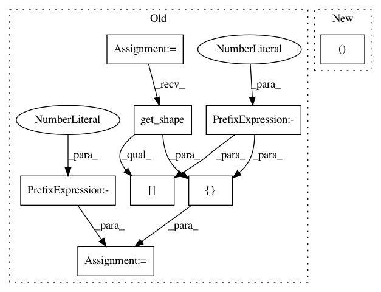

3da641f3841d0cbb55543e691d4a2be1ca4102b7,deepctr/layers.py,CrossNet,call,#CrossNet#Any#,232
Before Change
if K.ndim(inputs) !=2 :
raise ValueError("Unexpected inputs dimensions %d, expect to be 2 dimensions"% (K.ndim(inputs)))
x = inputs
dim = x.get_shape()[-1]
x_0 = K.reshape(x,[-1,dim, 1])
x_l = x_0
for i in range(self.layer_num):
dot_ = tf.matmul(x_0, tf.transpose(x_l, [0, 2, 1])) // K.dot(x_0,K.transpose(x_l))
dot_ = K.dot(dot_, self.kernels[i])
//x_l = K.bias_add(dot_+ x_l,self.bias[i]) // K.bias_add(dot_, self.bias)
x_l = dot_ + x_l + self.bias[i]//K.reshape(self.bias[i],[1,dim,1])
x_l = K.reshape(x_l, [-1, dim])
return x_l
def get_config(self,):
After Change
x_0 = tf.expand_dims(inputs,axis=2)
x_l = x_0
for i in range(self.layer_num):
xl_w = tf.tensordot(tf.transpose(x_l,[0,2,1]),self.kernels[i],axes=(-1,0))
dot_ = tf.matmul(x_0,xl_w)
x_l = dot_ + x_l + self.bias[i]
x_l = tf.squeeze(x_l,axis=2)
In pattern: SUPERPATTERN
Frequency: 3
Non-data size: 8
Instances
Project Name: shenweichen/DeepCTR
Commit Name: 3da641f3841d0cbb55543e691d4a2be1ca4102b7
Time: 2018-11-28
Author: last.fantasy@qq.com
File Name: deepctr/layers.py
Class Name: CrossNet
Method Name: call
Project Name: deepmipt/DeepPavlov
Commit Name: d86360af087d51f5e2cb2f9e57ddc95207fc3cd4
Time: 2018-06-05
Author: yurakuratov@gmail.com
File Name: deeppavlov/core/layers/tf_layers.py
Class Name:
Method Name: cudnn_lstm
Project Name: deepmipt/DeepPavlov
Commit Name: d86360af087d51f5e2cb2f9e57ddc95207fc3cd4
Time: 2018-06-05
Author: yurakuratov@gmail.com
File Name: deeppavlov/core/layers/tf_layers.py
Class Name:
Method Name: cudnn_gru